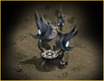
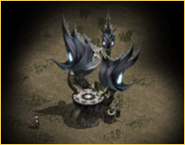

|
2003年6月17日
韓國測試伺服器6月17日檔案內容 - 新種族NPC登場！
今天韓國測試伺服器的檔案中加入了不少新NPC，其中更有新種族的村民NPC，從表面來看他們應該是黑暗精靈了！
nProtect更新了，變了常註程式
火元素首領
地元素首領
獨角獸
守護者盔甲
黑暗精靈公會領袖
黑暗精靈女領袖
黑暗精靈聖者
黑暗精靈村民（男）
黑暗精靈村民（女）
黑暗精靈村民（男）
黑暗精靈村民（女）
黑暗精靈魔法師
韓國測試伺服器6月14日更新內容
來源：韓國天堂官方網站公告
英文翻譯：Lineage
Compendium
1. 沒有盟徽的血盟不能宣示攻城戰。
2. 在戰鬥區域下，假如玩家A攻擊了玩家B，而玩家B又還手的話，會自動變為決鬥模式。
天堂第十三章預覽
來源：韓國天堂官方網站公告
英文翻譯：Lineage
Compendium
韓國官方釋出了一些第十三章的圖片，他們提及會有一個浮在天空的地方，名為"夢想之島"，另外他們正研究滅少死亡時的懲罰及經驗值損失

  
每個帳號可以創四名角色：
但新職業仍是一個謎．．．
0Hercules0 72級了！
來源：NewsPos.com
英文翻譯：Lineage
Compendium
韓國Castoll伺服器的騎士0Hercules0終於72級了！（他在三月尾時為70級）
此文章提及韓國的超高等級玩家（如Poseidon，Light，0Hercules0等）都有衝上75級的目標，另外0Hercules0希望NC能夠像其他遊戲一樣，支持職業遊戲玩家。
Lineage II將會在7月9日開始公開測試
來源：韓國天堂官方網站公告
英文翻譯：Lineage
2 Compendium
以下內容翻譯自官方的FAQs：
1.
在公開測試前會否淸除內部測試伺服器的資料？
答：是的。
2. 參與內部測試的玩家會有甚麼好處？
答：他們可以參與活動及預留公開測試的角色名稱。
3. 內部測試何時結束？公開測試何時開始？
答：內部測試會7月7日下午6時結束，公開測試會7月9日下午2時開始。
4. 公開測試會持續多久？
答：公開測試會持續到沒有需要為止。
5. 你們會怎樣控制下載內部測試軟件的玩家？
答：玩家可以在公開測試前開啟測試帳號，我們亦有多個網站供玩家下載用戶端，玩家有需要的話亦可以購買光碟。
6. 內部測試的玩家會有甚麼活動？
目前我們有三個已經計劃好的活動：
- 20級或以上的玩家可以預留公開伺服器的角色名稱。
- 有很多禮物的GM活動。
- 在月內會有玩家面對面的聚會。 |